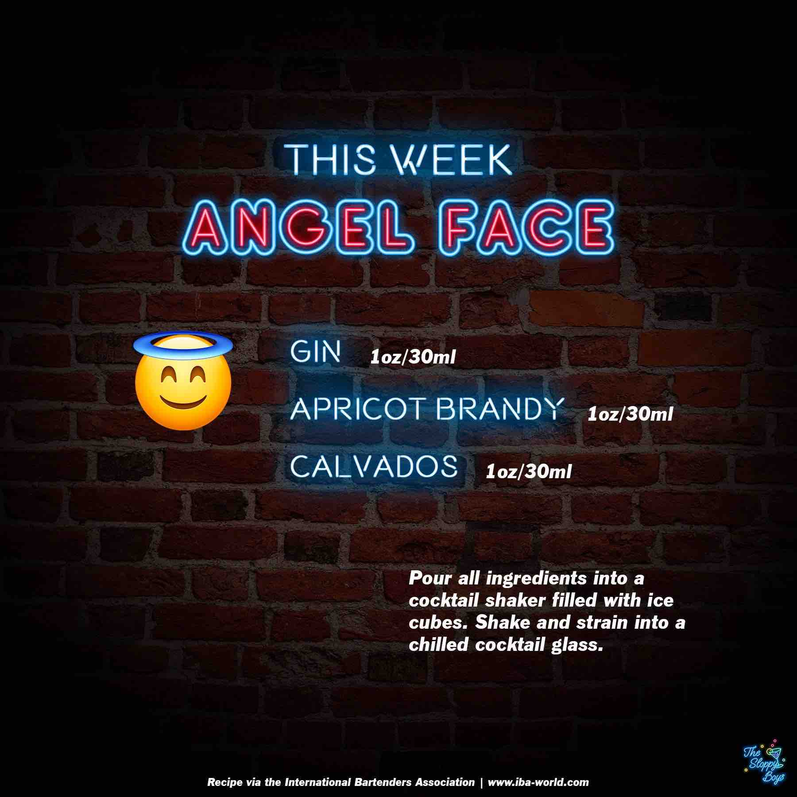

Sloppy Drinks
Podcast
About

Angel Face
Ingredients
Gin (1oz/30ml)
Apricot Brandy (1oz/30ml)
Calvados (1oz/30ml)
Steps
Pour all ingredients into a cocktail shaker filled with ice cubes.
Shake and strain into a chilled cocktail glass.
Notes
Episode 127 - Angel Face (March 24, 2023)
IBA Angel Face Recipe
Artwork by The Sloppy Boys